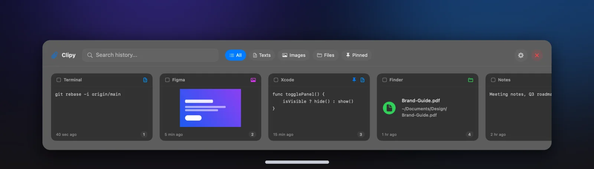
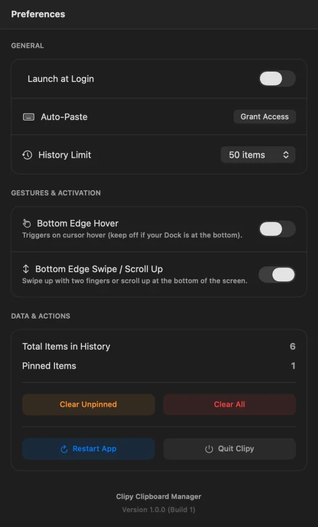

A clipboard manager that never leaves your Mac.
Clipy keeps everything you copy, text, images and files, and brings it back with one shortcut or a swipe. It’s a native macOS app in Swift, SwiftUI and AppKit, built to stay fully offline: nothing you copy is sent anywhere.

The idea
macOS remembers one thing you copied. Clipy remembers the last 50 (or up to the limit you set) and shows them as cards you can see at a glance: the text, a preview of the image, or the file, with the app it came from and when. Search, filter by type, pin what you reuse, and paste with a number key.
Working with macOS
Most of the work is in the places where an app has to reach outside its own window: watching the system clipboard, catching a shortcut in every app, and pasting into someone else’s app.
private let ignoredTypes: Set<NSPasteboard.PasteboardType> = [ NSPasteboard.PasteboardType("org.nspasteboard.ConcealedType"), NSPasteboard.PasteboardType("org.nspasteboard.TransientType"), NSPasteboard.PasteboardType("org.nspasteboard.AutoGeneratedType"), NSPasteboard.PasteboardType("com.agilebits.onepassword") ] private func checkPasteboard() { let currentChangeCount = pasteboard.changeCount guard currentChangeCount != lastChangeCount else { return } lastChangeCount = currentChangeCount // Passwords and one-off values are never recorded if let types = pasteboard.types, !ignoredTypes.isDisjoint(with: types) { return } let sourceApp = NSWorkspace.shared.frontmostApplication?.localizedName // …read a file URL, an image or text, and hand it to the manager }
final class CGEventPasteSimulator: PasteSimulating { private let virtualKeyV: CGKeyCode = 0x09 func simulatePaste() { let source = CGEventSource(stateID: .hidSystemState) let down = CGEvent(keyboardEventSource: source, virtualKey: virtualKeyV, keyDown: true) down?.flags = .maskCommand let up = CGEvent(keyboardEventSource: source, virtualKey: virtualKeyV, keyDown: false) up?.flags = .maskCommand down?.post(tap: .cgSessionEventTap) up?.post(tap: .cgSessionEventTap) } }
- The global ⌘⇧V goes through Carbon’s
RegisterEventHotKey, which works no matter which app is in front. - A global
NSEventmonitor opens the panel when you scroll up within 60 points of the bottom of the screen. - The panel is a borderless, non-activating panel, so opening it doesn’t steal focus from the app you’re about to paste into.
- Typing ⌘V into another app needs macOS Accessibility permission. Clipy checks it with
CGPreflightPostEventAccess, asks withCGRequestPostEventAccess, and links straight to the right System Settings pane if it was declined.
Architecture
The history manager depends only on four small protocols. Each system integration sits behind one, so it can be swapped out. The screenshots on this page use exactly that: the real views, fed by in-memory fakes.
ClipboardHistoryManager@Observable state: history, deduplication, pinning, the history limitClipboardStorageProtocolDiskClipboardStorage: JSON history in Application Support, images in CachesClipboardMonitoringProtocolClipboardMonitor: watches the pasteboard, skips concealed typesHotkeyManagingCarbonHotkeyManager: the system-wide ⌘⇧VPasteSimulatingCGEventPasteSimulator: types ⌘V into the app you came fromFrom copy to paste
- CopyYou copy text, an image or a file in any app.
- DetectClipy notices the pasteboard changed, checking its change count twice a second.
- FilterItems marked concealed or transient by password managers are skipped.
- StoreHistory is saved as JSON; images go to the cache; a repeat copy moves to the top instead of duplicating.
- Open⌘⇧V, a two-finger swipe at the bottom edge, the pill, or the menu bar.
- PastePick a card or press 1–9: Clipy reactivates your previous app and types ⌘V.
Preferences
Launch at login (switched on the first time Clipy runs, through SMAppService), auto-paste access, the history limit, and the two gesture triggers each take one click. The bottom-edge hover is off by default, with a note to keep it off if your Dock sits at the bottom. Clear Unpinned and Clear All manage the stored history, and a restart button relaunches the app.

Try it
Download for Mac ↓Source code ↗
Clipy 1.0 is a universal app for Apple silicon and Intel Macs and needs macOS 26.4 or later. It isn’t notarized by Apple yet, so the first time you open it, go to System Settings → Privacy & Security and click Open Anyway. Allow it under Accessibility to use auto-paste. The full steps are on the release page ↗.